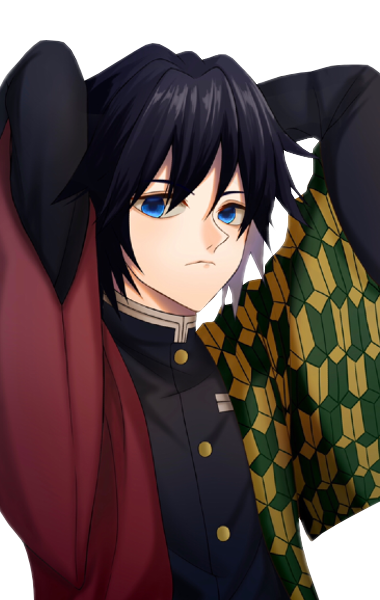

Giyu Tomioka
Kimetsu no Yaiba
- Idade:20 anos
- Aniversário:8 de fevereiro
- Altura:176 cm
- Peso:69 kg
- Cabelos:Pretos
- Olhos:Azuis
- Tipo sanguíneo:Não informado
- Raça:Humano
Descrição:
Giyu sempre usa uma expressão séria no rosto. Ele tem uma personalidade reservada e um forte senso de justiça, sem tolerância para com aqueles que não conhecem suas próprias limitações e jogam fora suas vidas.
Giyu parece ter um complexo com o que os outros pensam dele e fica chocado quando Shinobu Kocho afirma que é odiado por muitos.
Ele é um homem de poucas palavras e tem problemas para interagir com os outros, por isso geralmente se mantém à distância.